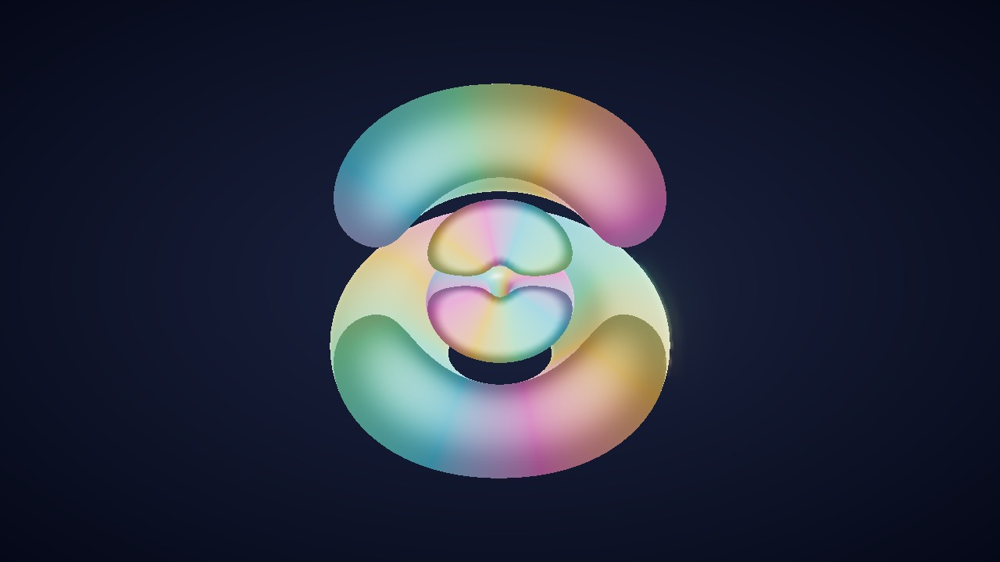
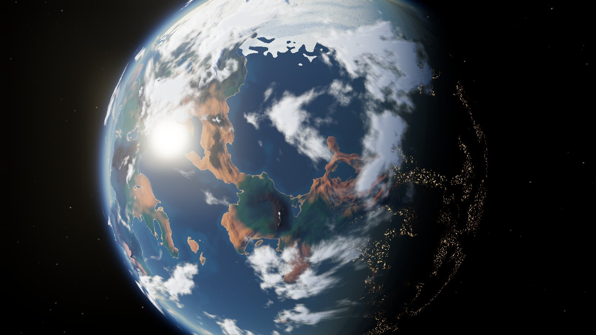
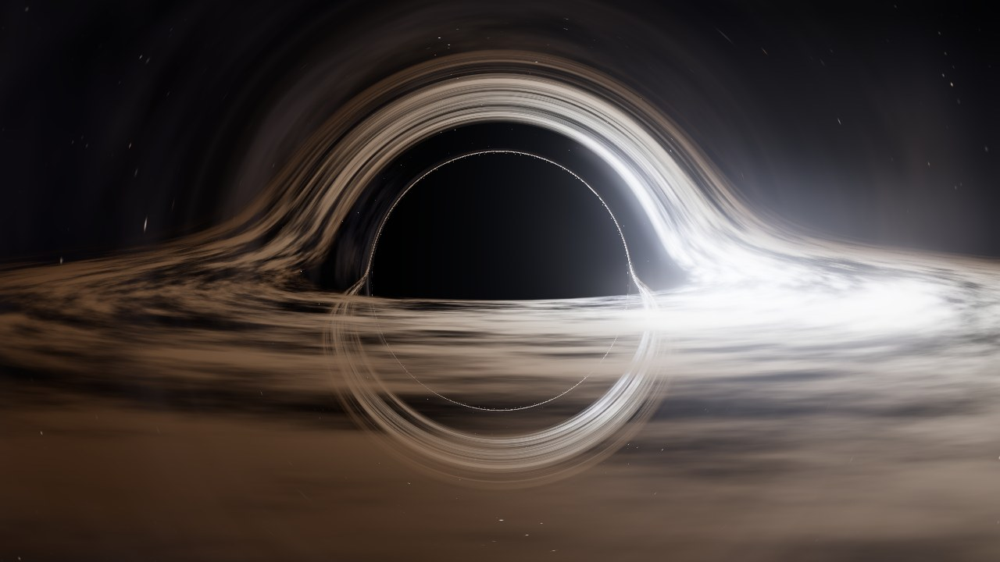
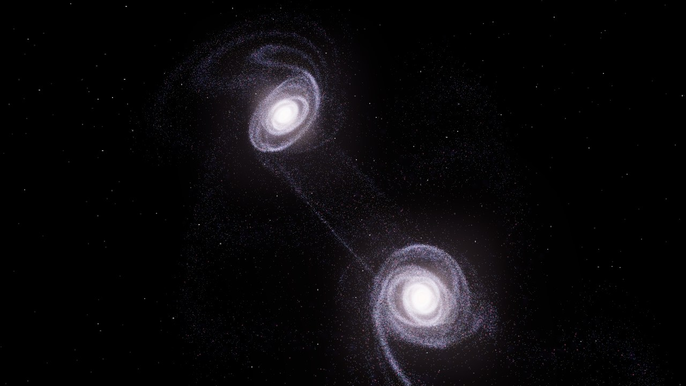
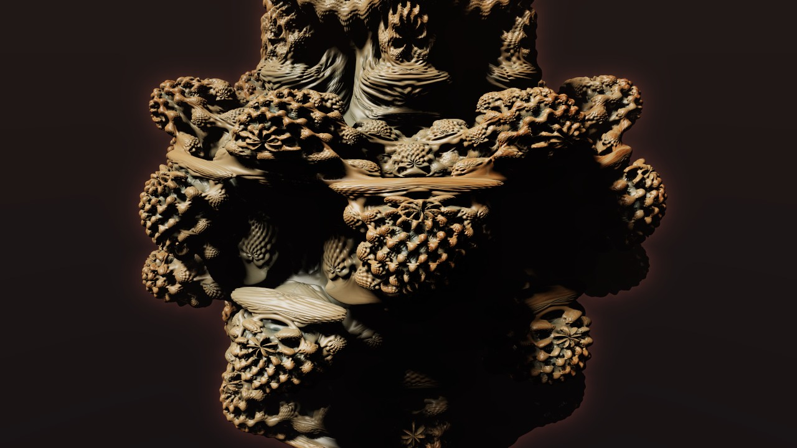

المعروضات مرتّبة من الأصغر إلى الأكبر: من عُشر نانومتر إلى مئة ألف سنة ضوئية، ثم شكل لا حجم له.
-
10−10 م

ذرة الهيدروجين
إلكترون واحد حول بروتون واحد، مرسوم من حل معادلة شرودنغر. ركّب حالتين فوق بعضهما وشاهد السحابة تتأرجح، فهذا التأرجح هو ما يُطلق الضوء.
افتح التجربة -
107 م

كوكب من العدم
قارات وجبال ومحيطات وغيوم تتولّد من الرياضيات، وغلاف جوي يحسب تشتت الضوء فيصير الغروب برتقالياً. انزل إلى السطح، أو ولّد كوكباً لم يره أحد قبلك.
افتح التجربة -
1010 م

الثقب الأسود
كل بكسل يتتبّع شعاع ضوء ينحني حول الثقب حسب النسبية العامة. القرص الذي تراه فوقه هو نفسه الذي خلفه، والجهة الأسطع مقبلة نحوك بنصف سرعة الضوء.
افتح التجربة -
1021 م

تصادم مجرتين
ربع مليون نجمة، أو مليون إن احتمل جهازك، تتحرك بالجاذبية وحدها. أذرع حلزونية تتمزق، وذيول من النجوم طولها مئات آلاف السنين الضوئية.
افتح التجربة -
∞

فراكتل لا ينتهي
أشكال ثلاثية الأبعاد من معادلة سطر واحد. انقر مرتين على أي نتوء لتنغمس فيه، وستجد تحته عالماً بنفس التعقيد، مهما قرّبت.
افتح التجربة